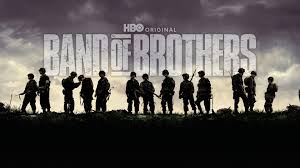
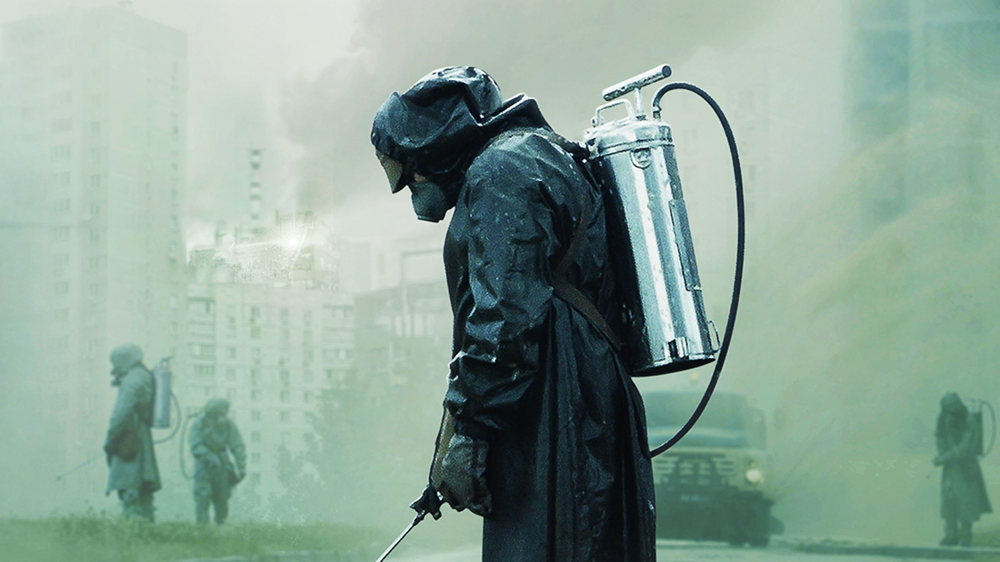

-
BREAKING BAD
IMDB - 9.5

A chemistry teacher diagnosed with inoperable lung cancer turns to manufacturing and selling methamphetamine with a former student to secure his family's future.
-
BAND OF BROTHERS
IMDB - 9.4
The story of Easy Company of the U.S. Army 101st Airborne Division and their mission in World War II Europe, from Operation Overlord to V-J Day.
-
CHERNOBYL
IMDB - 9.3
In April 1986, the city of Chernobyl in the Soviet Union suffers one of the worst nuclear disasters in the history of mankind. Consequently, many heroes put their lives on the line in the following days, weeks and months.
-
THE WIRE
IMDB - 9.3

The Baltimore drug scene, as seen through the eyes of drug dealers and law enforcement.
-
THE SOPRANOS
IMDB - 9.2

New Jersey mob boss Tony Soprano deals with personal and professional issues in his home and business life that affect his mental state, leading him to seek professional psychiatric counseling.